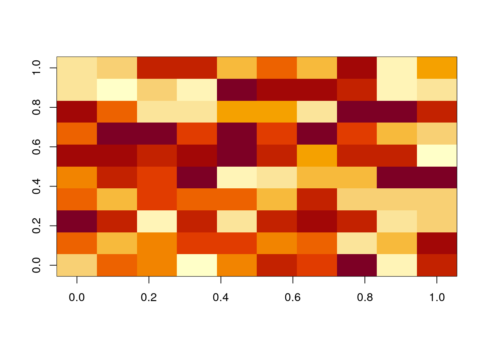
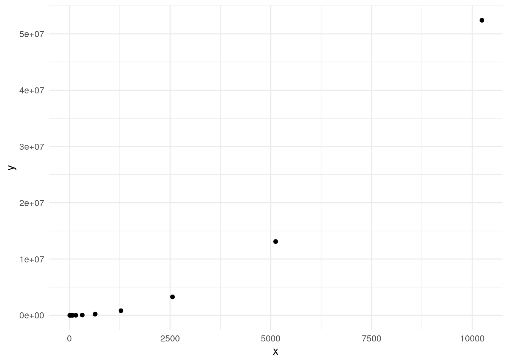
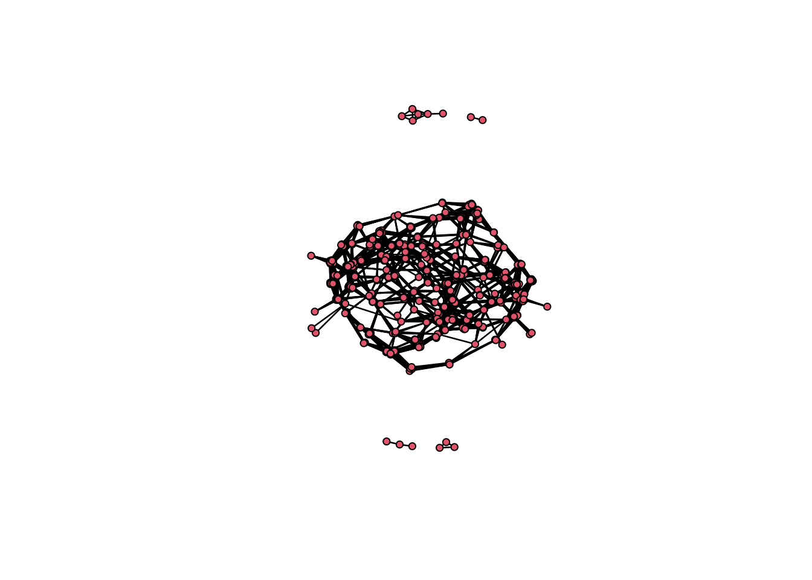

Last updated: 2024-04-10
Checks: 7 0
Knit directory: muse/
This reproducible R Markdown analysis was created with workflowr (version 1.7.1). The Checks tab describes the reproducibility checks that were applied when the results were created. The Past versions tab lists the development history.
Great! Since the R Markdown file has been committed to the Git repository, you know the exact version of the code that produced these results.
Great job! The global environment was empty. Objects defined in the global environment can affect the analysis in your R Markdown file in unknown ways. For reproduciblity it’s best to always run the code in an empty environment.
The command set.seed(20200712) was run prior to running
the code in the R Markdown file. Setting a seed ensures that any results
that rely on randomness, e.g. subsampling or permutations, are
reproducible.
Great job! Recording the operating system, R version, and package versions is critical for reproducibility.
Nice! There were no cached chunks for this analysis, so you can be confident that you successfully produced the results during this run.
Great job! Using relative paths to the files within your workflowr project makes it easier to run your code on other machines.
Great! You are using Git for version control. Tracking code development and connecting the code version to the results is critical for reproducibility.
The results in this page were generated with repository version 7fac102. See the Past versions tab to see a history of the changes made to the R Markdown and HTML files.
Note that you need to be careful to ensure that all relevant files for
the analysis have been committed to Git prior to generating the results
(you can use wflow_publish or
wflow_git_commit). workflowr only checks the R Markdown
file, but you know if there are other scripts or data files that it
depends on. Below is the status of the Git repository when the results
were generated:
Ignored files:
Ignored: .Rproj.user/
Ignored: r_packages_4.3.2/
Ignored: r_packages_4.3.3/
Note that any generated files, e.g. HTML, png, CSS, etc., are not included in this status report because it is ok for generated content to have uncommitted changes.
These are the previous versions of the repository in which changes were
made to the R Markdown (analysis/cor_mat.Rmd) and HTML
(docs/cor_mat.html) files. If you’ve configured a remote
Git repository (see ?wflow_git_remote), click on the
hyperlinks in the table below to view the files as they were in that
past version.
| File | Version | Author | Date | Message |
|---|---|---|---|---|
| Rmd | 7fac102 | Dave Tang | 2024-04-10 | Creating a correlation matrix with R |
Let \(A\) be a \(m \times n\) matrix, where \(a_{ij}\) are elements of \(A\), where \(i\) is the \(i_{th}\) row and \(j\) is the \(j_{th}\) column.
\[ A = \begin{bmatrix} a_{11} & \cdots & a_{1j} & \cdots & a_{1n} \\ \vdots & \ddots & \vdots && \vdots \\ a_{i1} & \cdots & a_{ij} & \cdots & a_{in} \\ \vdots && \vdots & \ddots & \vdots \\ a_{m1} & \cdots & a_{mj} & \cdots & a_{mn} \end{bmatrix} \]
If the matrix \(A\) contained transcript expression data, then \(a_{ij}\) is the expression level of the \(i^{th}\) transcript in the \(j^{th}\) assay. The elements of the \(i^{th}\) row of \(A\) form the transcriptional response of the \(i^{th}\) transcript. The elements of the \(j^{th}\) column of \(A\) form the expression profile of the \(j^{th}\) assay.
Transcripts that have a similar transcriptional response may indicate that they are co-expressed together and could have related biological functions. A simple way of looking at co-expression is through correlation, i.e., correlating all pairs of transcriptional responses, which results in a correlation matrix.
Let’s get started with a small \(10 \times 10\) matrix. The code below will create random matrix with numbers ranging from 1 to 100.
set.seed(12345)
my_rows <- 10
my_cols <- 10
x <- runif(n = my_rows * my_cols, min = 1, max = 100)
A <- matrix(
data = runif(100,1,100),
nrow = my_rows,
ncol = my_cols,
byrow = TRUE
)
image(A)
We will calculate the Spearman’s rank correlation coefficient, which is a more robust measure of correlation.
Below are the first and second rows of matrix A.
A[1, ] [1] 30.15207 62.10811 97.45314 62.20299 52.61555 90.34788 64.10799 86.56581
[9] 25.86066 22.29184A[2, ] [1] 61.338128 38.961019 75.771833 38.593888 79.702234 90.663422 98.418591
[8] 59.206849 1.936941 32.758415Use cor() to calculate the correlation between row 1 and
2.
cor(A[1,], A[2,], method = "spearman")[1] 0.6121212If we provide cor() with a matrix, it will calculate all
correlations between columns. If we are interested in row correlations,
we need to transpose the matrix.
cor_mat <- cor(t(A), method = "spearman")
cor_mat [,1] [,2] [,3] [,4] [,5] [,6]
[1,] 1.00000000 0.61212121 -0.15151515 0.33333333 0.11515152 -0.06666667
[2,] 0.61212121 1.00000000 0.41818182 0.52727273 0.12727273 -0.05454545
[3,] -0.15151515 0.41818182 1.00000000 0.40606061 0.39393939 -0.18787879
[4,] 0.33333333 0.52727273 0.40606061 1.00000000 -0.27272727 -0.34545455
[5,] 0.11515152 0.12727273 0.39393939 -0.27272727 1.00000000 0.35757576
[6,] -0.06666667 -0.05454545 -0.18787879 -0.34545455 0.35757576 1.00000000
[7,] 0.16363636 0.10303030 -0.01818182 -0.18787879 0.45454545 0.55151515
[8,] -0.21212121 -0.13939394 -0.16363636 -0.41818182 -0.12727273 0.50303030
[9,] 0.51515152 0.57575758 0.10303030 0.40606061 -0.04242424 -0.62424242
[10,] -0.27272727 -0.10303030 -0.22424242 -0.01818182 -0.62424242 -0.63636364
[,7] [,8] [,9] [,10]
[1,] 0.16363636 -0.2121212 0.51515152 -0.27272727
[2,] 0.10303030 -0.1393939 0.57575758 -0.10303030
[3,] -0.01818182 -0.1636364 0.10303030 -0.22424242
[4,] -0.18787879 -0.4181818 0.40606061 -0.01818182
[5,] 0.45454545 -0.1272727 -0.04242424 -0.62424242
[6,] 0.55151515 0.5030303 -0.62424242 -0.63636364
[7,] 1.00000000 -0.2363636 -0.46666667 -0.58787879
[8,] -0.23636364 1.0000000 -0.36969697 -0.13939394
[9,] -0.46666667 -0.3696970 1.00000000 0.36969697
[10,] -0.58787879 -0.1393939 0.36969697 1.00000000The correlation of row 1 with row 1, row 2 with row 2, and so on are all 1 because we are correlating identical rows. The correlation of row 1 with row 2 and row 2 with row 1 are the same because the order does not matter with correlation; this value is also the same as the one we manually calculated before, which is a good sanity check.
For 10 rows, we needed to calculate 45 correlations. We can use the
choose() function to return the number of comparisons.
choose(10, 2)[1] 45Let’s plot the number of comparisons as the number of rows doubles.
double_num <- function(n, l){
if(n == 1){
return(c(l, list(l[[length(l)]]*2)))
}
return(double_num(n-1, c(l, l[[length(l)]]*2)))
}
x <- unlist(double_num(10, list(10)))
y <- sapply(x, function(x) choose(x, 2))
ggplot(data.frame(x = x, y = y), aes(x, y)) +
geom_point() +
theme_minimal()
Since the number of comparisons increases exponentially, we will need to use more cores to calculate all pairwise comparisons if we want results in a reasonable time.
Dataset with 2,700 cells.
pbmc3k <- read_csv(file = "https://davetang.org/file/pbmc3k/pbmc3k.csv.gz", show_col_types = FALSE)New names:
• `` -> `...1`rn <- pull(pbmc3k[, 1])
pbmc3k <- pbmc3k[, -1]
pbmc3k <- as.matrix(pbmc3k)
row.names(pbmc3k) <- rn
pbmc3k <- pbmc3k[rowSums(pbmc3k)>9, ]
pbmc3k <- pbmc3k[, colSums(pbmc3k)>200 ]
dim(pbmc3k)[1] 11259 2700Number of comparisons.
choose(ncol(pbmc3k), 2)[1] 3643650system.time(
pbmc3k_cor <- cor(pbmc3k, method = "spearman")
) user system elapsed
41.650 2.282 43.938 Dimensions of the correlation matrix.
dim(pbmc3k_cor)[1] 2700 2700We will use pnas_expression.txt from the study ” Determination of tag density required for digital transcriptome analysis: application to an androgen-sensitive prostate cancer model”.
pnas_exp <- read.table(
file = "https://davetang.org/file/pnas_expression.txt",
header = TRUE,
row.names = 1
)
pnas_exp_rn <- row.names(pnas_exp)
dim(pnas_exp)[1] 37435 8We won’t be using the gene lengths, so we will remove the
len column.
pnas_exp <- pnas_exp[,-pnas_exp$len]
head(pnas_exp) lane1 lane2 lane3 lane4 lane5 lane6 lane8
ENSG00000215696 0 0 0 0 0 0 0
ENSG00000215700 0 0 0 0 0 0 0
ENSG00000215699 0 0 0 0 0 0 0
ENSG00000215784 0 0 0 0 0 0 0
ENSG00000212914 0 0 0 0 0 0 0
ENSG00000212042 0 0 0 0 0 0 0Top 10 most highly expressed genes.
rs <- rowSums(pnas_exp)
top10 <- head(sort(rs, decreasing = TRUE), 10)
pnas_exp[names(top10), ] lane1 lane2 lane3 lane4 lane5 lane6 lane8
ENSG00000157214 5270 6208 7359 7521 9806 9786 4418
ENSG00000131051 4141 4926 5615 5548 8762 8479 3496
ENSG00000212875 4652 5409 6445 6668 5623 5727 2875
ENSG00000122566 3775 4131 5427 5831 6959 7069 2505
ENSG00000142875 3166 3735 3920 4375 8123 7758 3880
ENSG00000132570 4070 4704 5471 5548 6027 5665 2613
ENSG00000115053 4352 4612 5880 5892 4744 4948 1892
ENSG00000008128 3467 4300 4514 5018 5800 5814 2079
ENSG00000162669 4212 5000 5516 5812 4328 4172 1632
ENSG00000115648 940 1084 1317 1345 9730 9942 3272Normalise each column by its “depth”, then center and scale.
pnas_exp_norm <- apply(pnas_exp, 2, function(x) x / sum(x) * 1000000)
pnas_exp_norm <- apply(pnas_exp_norm, 2, scale)
row.names(pnas_exp_norm) <- pnas_exp_rn
pnas_exp_norm[names(top10), ] lane1 lane2 lane3 lane4 lane5 lane6
ENSG00000157214 41.702924 42.345887 40.954637 40.769545 41.78237 41.50440
ENSG00000131051 32.724307 33.557386 31.197773 30.017650 37.31179 35.93325
ENSG00000212875 36.788145 36.868498 35.841235 36.121108 23.87006 24.20273
ENSG00000122566 29.813613 28.107418 30.146001 31.559863 29.59104 29.92307
ENSG00000142875 24.970409 25.392717 21.715040 23.625368 34.57548 32.85996
ENSG00000132570 32.159665 32.035508 30.392160 30.017650 25.60005 23.93845
ENSG00000115053 34.402330 31.404820 32.680324 31.892284 20.10603 20.88221
ENSG00000008128 27.364177 29.265965 25.038192 27.129407 24.62800 24.57357
ENSG00000162669 33.288950 34.064678 30.643914 31.456322 18.32465 17.57447
ENSG00000115648 7.267664 7.219303 7.152472 7.113335 41.45693 42.16936
lane8
ENSG00000157214 48.15434
ENSG00000131051 38.06333
ENSG00000212875 31.26667
ENSG00000122566 27.21714
ENSG00000142875 42.26609
ENSG00000132570 28.39916
ENSG00000115053 20.50804
ENSG00000008128 22.55470
ENSG00000162669 17.66242
ENSG00000115648 35.61172Subset to the 500 most highly variable genes.
my_vars <- apply(pnas_exp_norm, 1, var)
hvgs <- head(sort(my_vars, decreasing = TRUE), 500)
pnas_exp_norm <- pnas_exp_norm[names(hvgs), ]
head(pnas_exp_norm) lane1 lane2 lane3 lane4 lane5 lane6
ENSG00000115648 7.2676637 7.2193031 7.1524721 7.1133353 41.456929 42.169359
ENSG00000106070 31.9449412 30.7261446 34.3251164 34.5788950 6.193259 6.214789
ENSG00000064042 10.6873315 10.9143126 12.0476880 11.7508733 33.239445 33.115712
ENSG00000142192 13.5423565 12.6487048 13.5694009 14.2903476 34.232908 32.979311
ENSG00000155368 3.8479958 3.2089496 2.5425773 2.7809702 19.035487 19.087676
ENSG00000096060 0.3090372 0.3297214 0.3718987 0.3995318 16.813041 15.677639
lane8
ENSG00000115648 35.611717
ENSG00000106070 4.397453
ENSG00000064042 31.135338
ENSG00000142192 31.485568
ENSG00000155368 22.127855
ENSG00000096060 15.681431Create correlation matrix.
pnas_exp_cor <- cor(t(pnas_exp_norm), method="spearman")
dim(pnas_exp_cor)[1] 500 500Install the {network} and {sna} packages.
install.packages(c("network", "sna"))Load libraries.
library(network)
library(sna)The network::network() function takes a matrix giving
the network structure in adjacency, incidence, or edgelist form or
otherwise, an object of class network.
We will convert the correlation matrix into a adjacency matrix.
pnas_exp_cor[upper.tri(pnas_exp_cor)] <- 42
my_index <- which(pnas_exp_cor < 42, arr.ind = TRUE)
pnas_exp_cor_adj <- cbind(my_index, pnas_exp_cor[my_index])
colnames(pnas_exp_cor_adj) <- c('row', 'col', 'spearman')
to_keep <- which(pnas_exp_cor_adj[, 'row'] != pnas_exp_cor_adj[, 'col'], arr.ind = TRUE)
pnas_exp_cor_adj <- pnas_exp_cor_adj[to_keep, ]
dim(pnas_exp_cor_adj)[1] 124750 3Distribution of the correlations.
summary(pnas_exp_cor_adj[, 'spearman']) Min. 1st Qu. Median Mean 3rd Qu. Max.
-1.000000 -0.714286 0.000000 0.003178 0.714286 1.000000 Keep only the higher correlations.
pnas_exp_cor_adj_sub <- pnas_exp_cor_adj[abs(pnas_exp_cor_adj[, 'spearman']) >= 0.95, ]
dim(pnas_exp_cor_adj_sub)[1] 5264 3Create network.
net <- network::network(pnas_exp_cor_adj_sub, directed = FALSE)
net Network attributes:
vertices = 500
directed = FALSE
hyper = FALSE
loops = FALSE
multiple = FALSE
bipartite = FALSE
total edges= 5264
missing edges= 0
non-missing edges= 5264
Vertex attribute names:
vertex.names
Edge attribute names not shown Component analysis
comp_dist <- component.dist(net)
class(comp_dist)[1] "list"Delete genes not connected with others
delete.vertices(net, which(comp_dist$csize[comp_dist$membership] == 1))
net Network attributes:
vertices = 475
directed = FALSE
hyper = FALSE
loops = FALSE
multiple = FALSE
bipartite = FALSE
total edges= 5264
missing edges= 0
non-missing edges= 5264
Vertex attribute names:
vertex.names
Edge attribute names not shown Plot network.
plot(net)
sessionInfo()R version 4.3.3 (2024-02-29)
Platform: x86_64-pc-linux-gnu (64-bit)
Running under: Ubuntu 22.04.4 LTS
Matrix products: default
BLAS: /usr/lib/x86_64-linux-gnu/openblas-pthread/libblas.so.3
LAPACK: /usr/lib/x86_64-linux-gnu/openblas-pthread/libopenblasp-r0.3.20.so; LAPACK version 3.10.0
locale:
[1] LC_CTYPE=en_US.UTF-8 LC_NUMERIC=C
[3] LC_TIME=en_US.UTF-8 LC_COLLATE=en_US.UTF-8
[5] LC_MONETARY=en_US.UTF-8 LC_MESSAGES=en_US.UTF-8
[7] LC_PAPER=en_US.UTF-8 LC_NAME=C
[9] LC_ADDRESS=C LC_TELEPHONE=C
[11] LC_MEASUREMENT=en_US.UTF-8 LC_IDENTIFICATION=C
time zone: Etc/UTC
tzcode source: system (glibc)
attached base packages:
[1] stats graphics grDevices utils datasets methods base
other attached packages:
[1] sna_2.7-2 statnet.common_4.9.0 network_1.18.2
[4] lubridate_1.9.3 forcats_1.0.0 stringr_1.5.1
[7] dplyr_1.1.4 purrr_1.0.2 readr_2.1.5
[10] tidyr_1.3.1 tibble_3.2.1 ggplot2_3.5.0
[13] tidyverse_2.0.0 workflowr_1.7.1
loaded via a namespace (and not attached):
[1] gtable_0.3.4 xfun_0.43 bslib_0.7.0 processx_3.8.4
[5] lattice_0.22-5 callr_3.7.6 tzdb_0.4.0 vctrs_0.6.5
[9] tools_4.3.3 ps_1.7.6 generics_0.1.3 curl_5.2.1
[13] parallel_4.3.3 fansi_1.0.6 highr_0.10 pkgconfig_2.0.3
[17] lifecycle_1.0.4 compiler_4.3.3 farver_2.1.1 git2r_0.33.0
[21] munsell_0.5.1 getPass_0.2-4 httpuv_1.6.15 htmltools_0.5.8.1
[25] sass_0.4.9 yaml_2.3.8 later_1.3.2 pillar_1.9.0
[29] crayon_1.5.2 jquerylib_0.1.4 whisker_0.4.1 cachem_1.0.8
[33] tidyselect_1.2.1 digest_0.6.35 stringi_1.8.3 labeling_0.4.3
[37] rprojroot_2.0.4 fastmap_1.1.1 grid_4.3.3 colorspace_2.1-0
[41] cli_3.6.2 magrittr_2.0.3 utf8_1.2.4 withr_3.0.0
[45] scales_1.3.0 promises_1.3.0 bit64_4.0.5 timechange_0.3.0
[49] rmarkdown_2.26 httr_1.4.7 bit_4.0.5 hms_1.1.3
[53] coda_0.19-4.1 evaluate_0.23 knitr_1.46 rlang_1.1.3
[57] Rcpp_1.0.12 glue_1.7.0 rstudioapi_0.16.0 vroom_1.6.5
[61] jsonlite_1.8.8 R6_2.5.1 fs_1.6.3